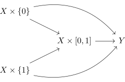

homotopy invariant functor and interval
Proposition
Let $\mathcal{C}$ be a category and $\mathcal{F}: \mathrm{Top} \rightarrow \mathcal{C}$ a functor from category Top
TFAE:
- $\mathcal{F}$ is homotopy invariant.
- for a topological space $X$ and the product topology, it follows, that the projection under the functor $\mathcal{F}(X) \sim \mathcal{F}(X \times [0,1])$
\begin{align*}
\mathcal{F}(\pi): \mathcal{F}(X \times I) \rightarrow \mathcal{F}(X)
\end{align*}
is an isomorphism
Proof
1) $\implies$ 2)
see: product with the interval homotopy equivalent
2) $\implies$ 1)
Let
\begin{align*}
\iota_t: X \rightarrow& X \times I \\
x \mapsto& (x,t)
\end{align*}
Then
\begin{align*}
\pi \circ \iota_t = \mathrm{id}
\end{align*}
and hence
\begin{align*}
\mathcal{F}(\mathrm{id}) =& \mathcal{F}(\pi \circ \iota_t) \\
=& \mathcal{F}(\pi) \circ \mathcal{F}(\iota_t)
\end{align*}
Here by assumption, $\mathcal{F}(\pi)$ is an isomorphism, thus by right inverse of an isomorphism as left inverse it follows, that $\mathcal{F}(\iota_t)$ is an inverse.
By assumption, there exists a homotopy
\begin{align*}
H: X \times I \rightarrow Y
\end{align*}
where
\begin{align*}
H \circ \iota_0 =& f \\
H \circ \iota_1 =& g
\end{align*}

Hence
\begin{align*}
\mathcal{F}(f) =& \mathcal{F}(H \circ \iota_0) \\
=& \mathcal{F}(H) \circ \mathcal{F}(\iota_0) \\
=& \mathcal{F}(H) \circ \mathcal{F}(\iota_1) \\
=& \mathcal{F}(H \circ \iota_1) \\
=& \mathcal{F}(g)
\end{align*}